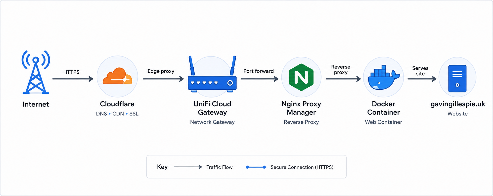

The Problem
I wanted a professional online presence that was more than just a digital CV. I wanted somewhere to document my projects, explain what I was learning and show the thought process behind the infrastructure I build.
Project
A live portfolio project documenting how I built my own website using a custom domain, Cloudflare, GitHub, HTML, CSS and a self-hosted deployment path.
I wanted a professional online presence that was more than just a digital CV. I wanted somewhere to document my projects, explain what I was learning and show the thought process behind the infrastructure I build.

The first version of the site was built using plain HTML and CSS. I chose this approach so I could understand every part of the structure before introducing more complex tooling later.
I created a public GitHub repository, built the initial folder structure, created the homepage and added responsive styling.